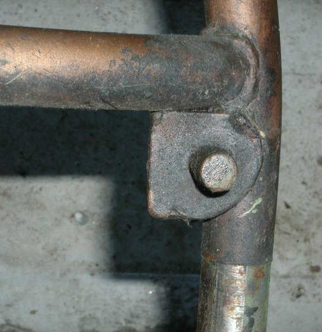
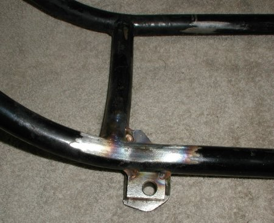
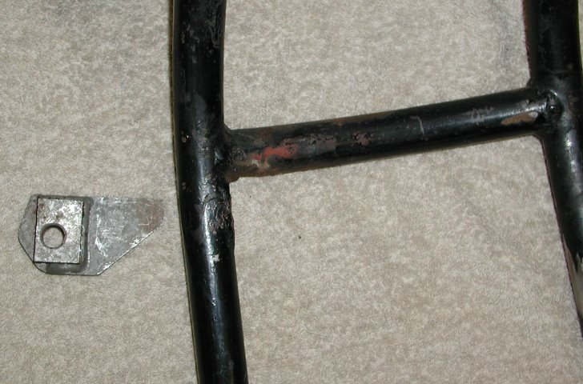
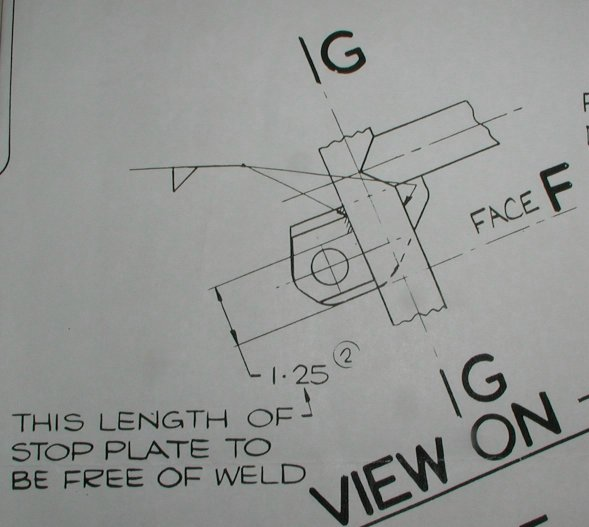
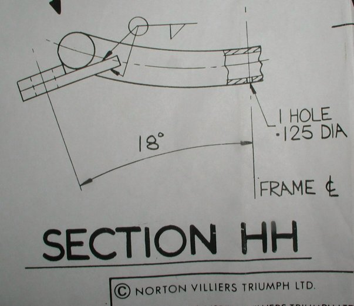
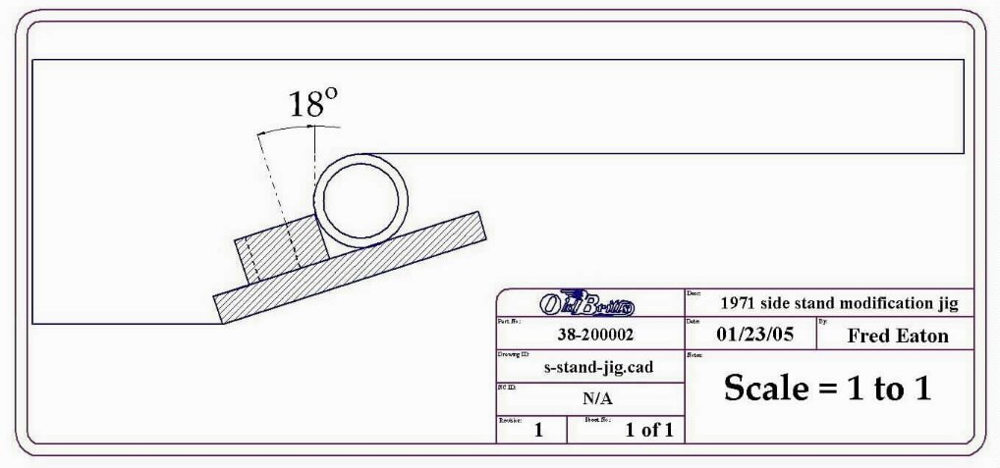
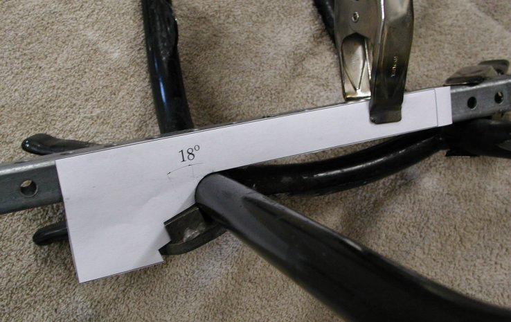

by Fred Eaton
Summary:
This article covers the procedure of replacing the existing side stand lug on the 1971 Commando with the later version bracket.
There are two reasons to upgrade the '71 side stand lug -- the pin on the '71 holding the side stand would break off and the '71 version of the
side stand is no longer available. There are bolt-on side stands available that bolt around the frame tube, but these bolt-on stands tend
to crimp the frame tube if used improperly. This procedure is normally done when a complete frame up restoration is being performed.


Procedure:
The first step is to remove the old bracket by cutting and grinding off the old bracket, trying not to damage the frame tubes.

Andover Norton was gracious enough to supply us with the factory drawings showing how the new bracket is to be welded to the frame. The following two pictures are the Andover drawings.


I drew up a pattern to make setting the new bracket at the correct angle. This drawing is printed actual size so you can cut out the pattern, tape it to a piece of cardboard or something straight and position the bracket for welding.


A picture of the new bracket held to the frame with spring clamps and using our pattern to get the correct placement. A square tube is layed accross both lower frame tubes just above where the new bracket is to be welded.
Please Note: Do not weld the top part of the bracket to the frame in the center. You need to allow room for the nut and washer holding the side stand to fit flush against the top of the bracket. The second picture in this article shows the welds just on the end of the top.
This page was written and designed by F. H. Eaton & Associates if you have any questions or comments please contact us at info@fheaton.com